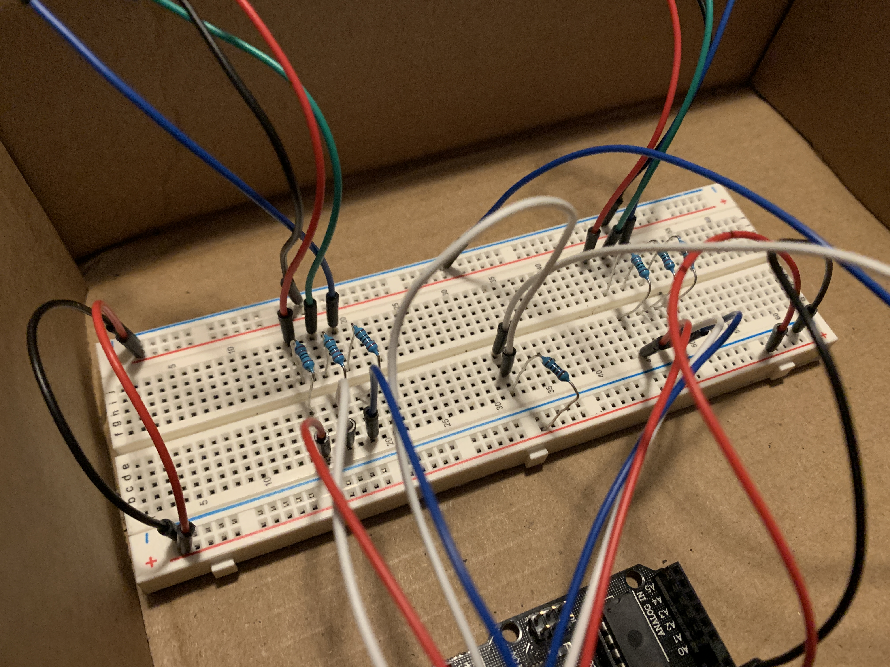
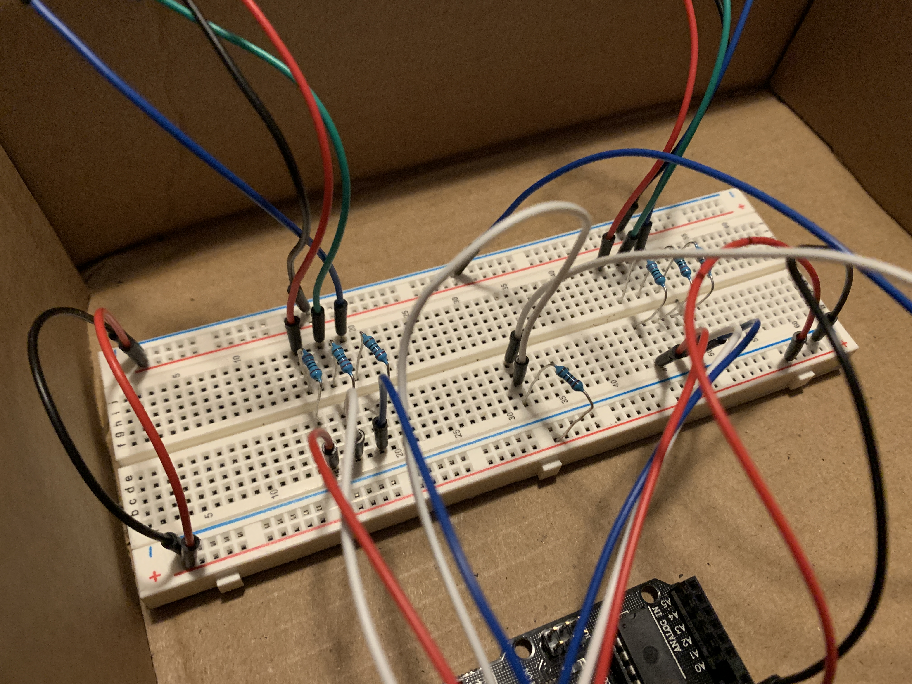
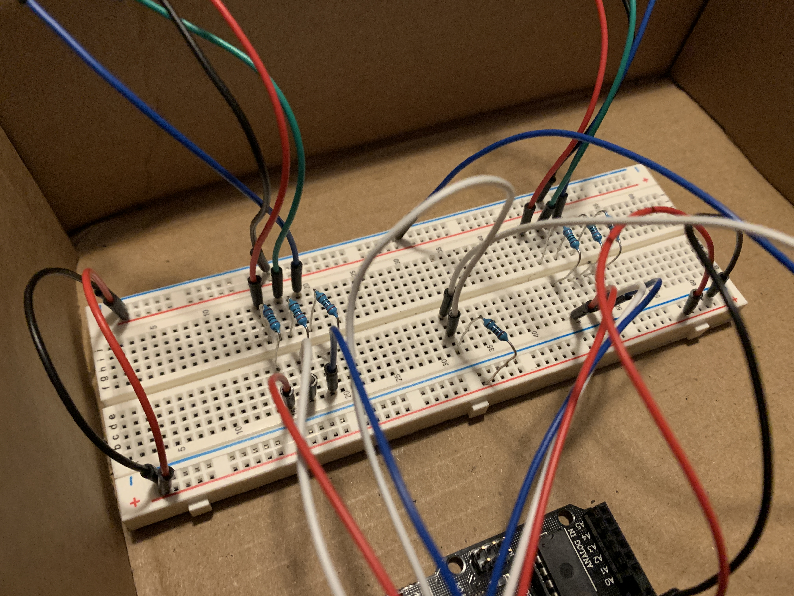

My primary inspiration for the enclosure and circuit I ended up making was a set of ping pong balls I found in my house. I thought that the light diffusing from the ping pong balls would look really cool and wanted to fit my RGB LEDs in a set of two ping pong balls. At first I wasn't sure what I would do with the light up ping pong balls, but I felt like they would work well as part of an alien and The Hypnotoad came to mind.
